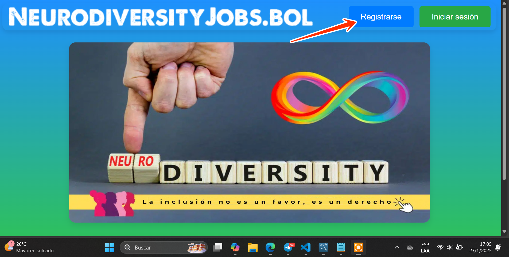
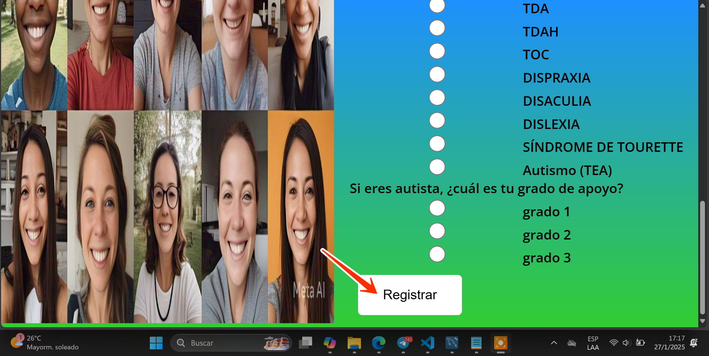
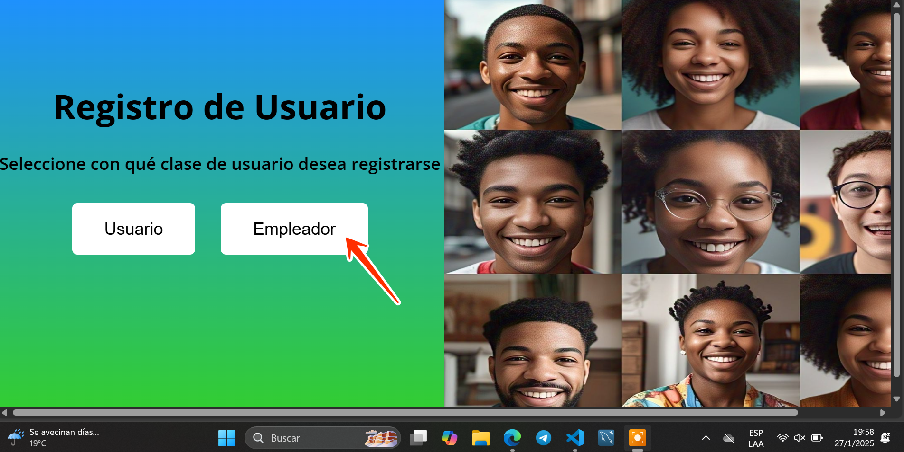
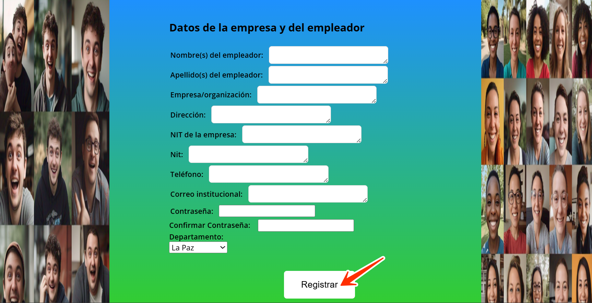

Si esta es tu primera vez en NeurodiversityJobs.bol no te preocupes, que a continuación te enseñamos a utilizar la página. Solo sigue los siguientes pasos:
Usuario
- ¿Cómo me registro?
- Haz click en "registrarse"

- El botón te llevará a la siguiente página. Selecciona "usuario"
- El botón te llevará a registrarte a un formulario. Llénalo con tus datos personales y más abajo haz click en "registrar"

- ¿Cómo busco una oferta de trabajo?
- Una vez ya registrado y logueado en la parte superior de tu página principal haz click en "ofertas de trabajo"
- Selecciona a la que desees postular haciendo click en el botón "postular"
- En tu página principal de usuario, en la sección de notificaciones te aparecerá el resultado de la postulación "pendiente", "aceptada" o "rechazada"
Empleador
- ¿Cómo me registro?
- Haz click en "registrarse"
- El botón te llevará a la siguiente página. Selecciona "empleador"

- El botón te llevará a registrarte a un formulario. Llénalo con tus datos personales y más abajo haz click en "registrar"

- ¿Cómo creo una oferta de trabajo?
- Una vez ya registrado y logueado en la parte inferior de tu página principal haz click en "Agregar una oferta"
- El botón te llevará a un formulario de creación de oferta de trabajo. Llénalo y haz click en "Crear Oferta"
- Cuando retornes a tu página principal de empleador verás en el apartado de "Mis Ofertas de Trabajo Actuales" el empleo que acabas de añadir al sistema
- ¿Cómo acepto/rechazo una postulación?
- Una vez ya registrado y logueado en la parte inferior de tu página principal te aparecerá un apartado donde están las "Postulaciones Pendientes" Haz click en la que desees revisar
- El botón te llevará al formulario de un postulante. Revísalo y decide si lo aceptas o lo rechazas